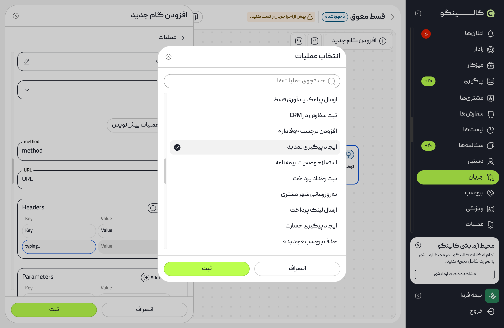
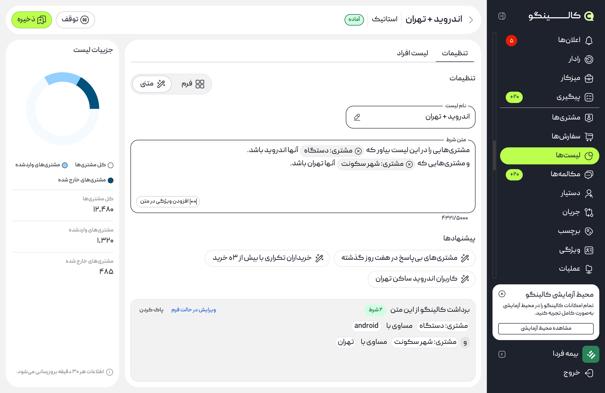
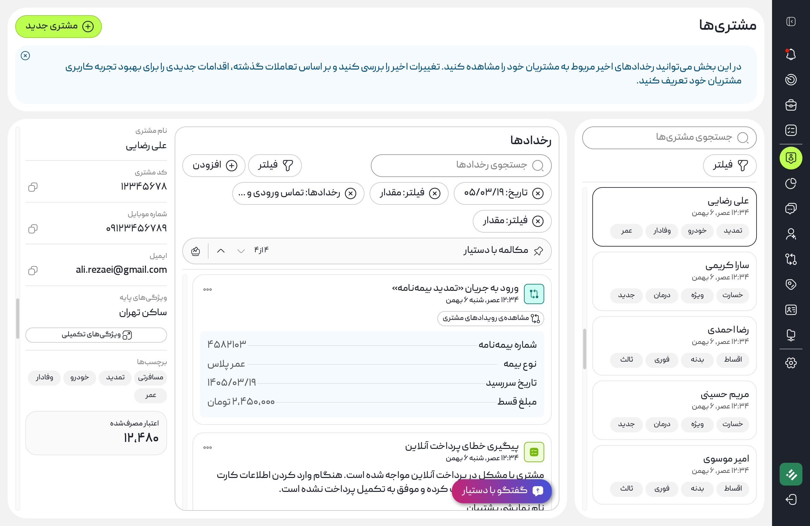
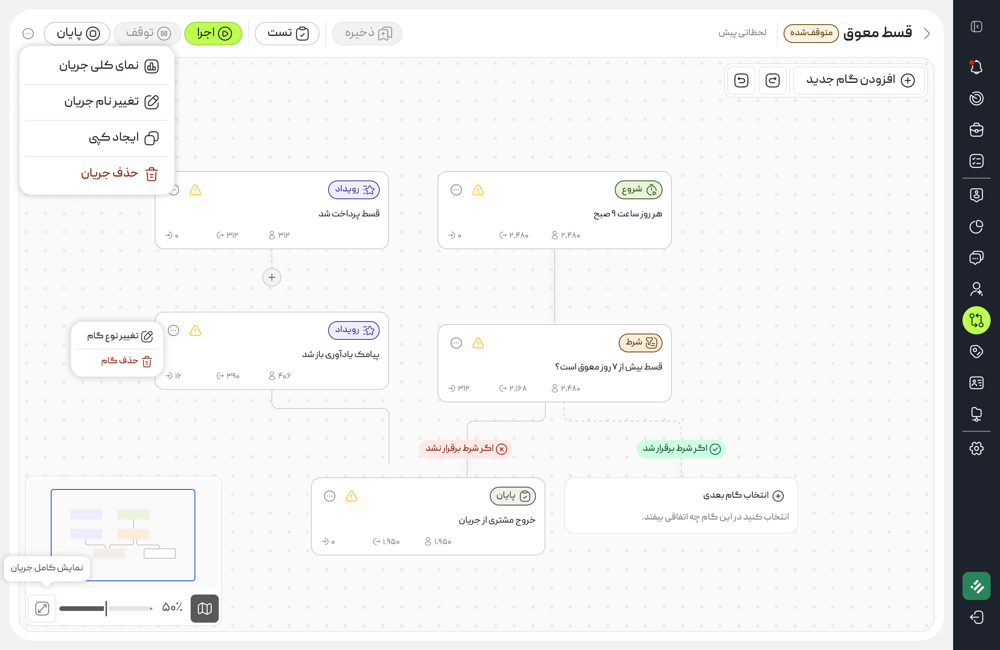
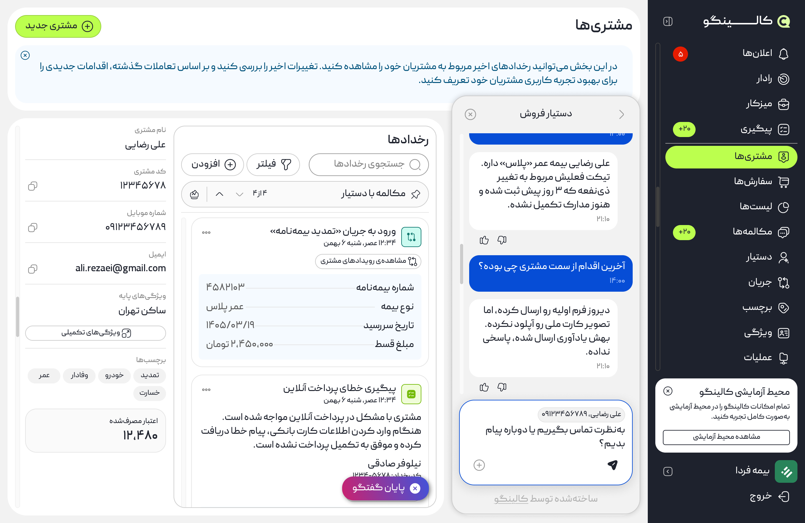
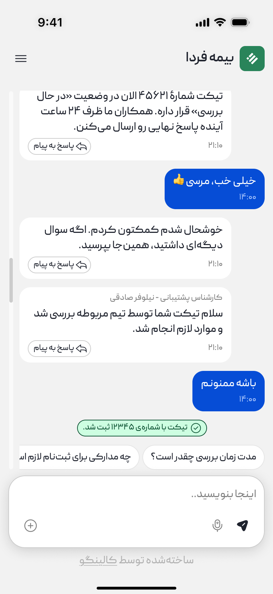
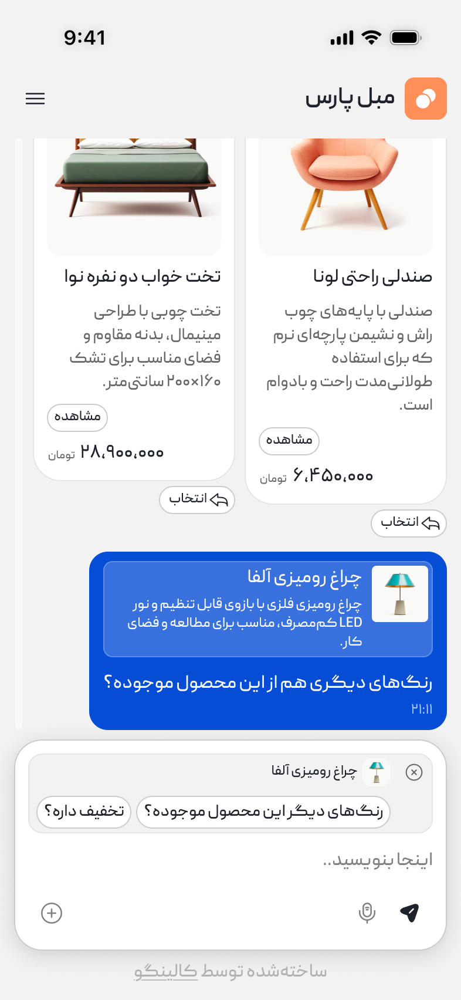
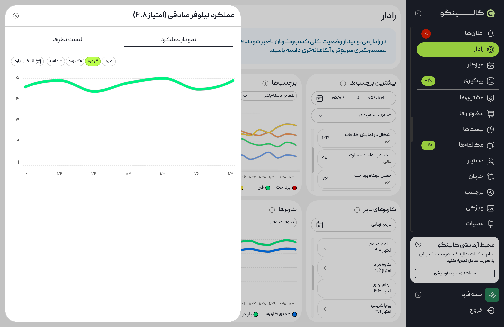
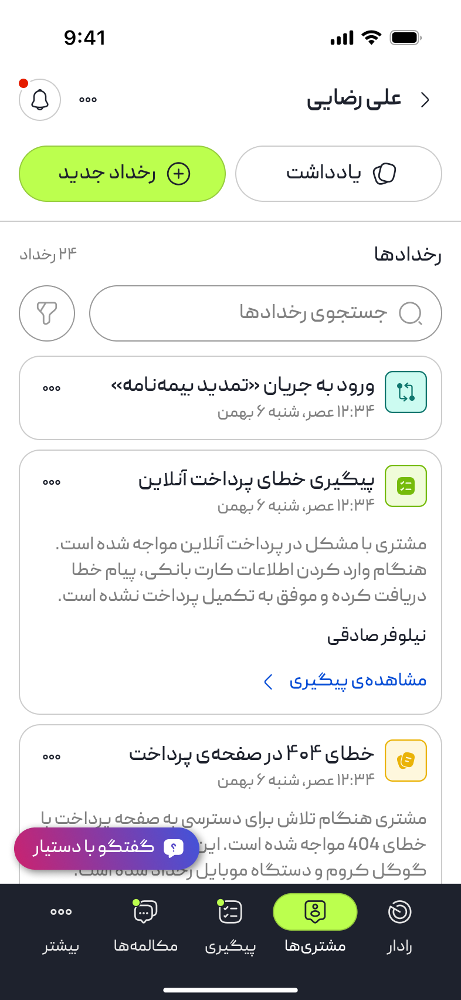
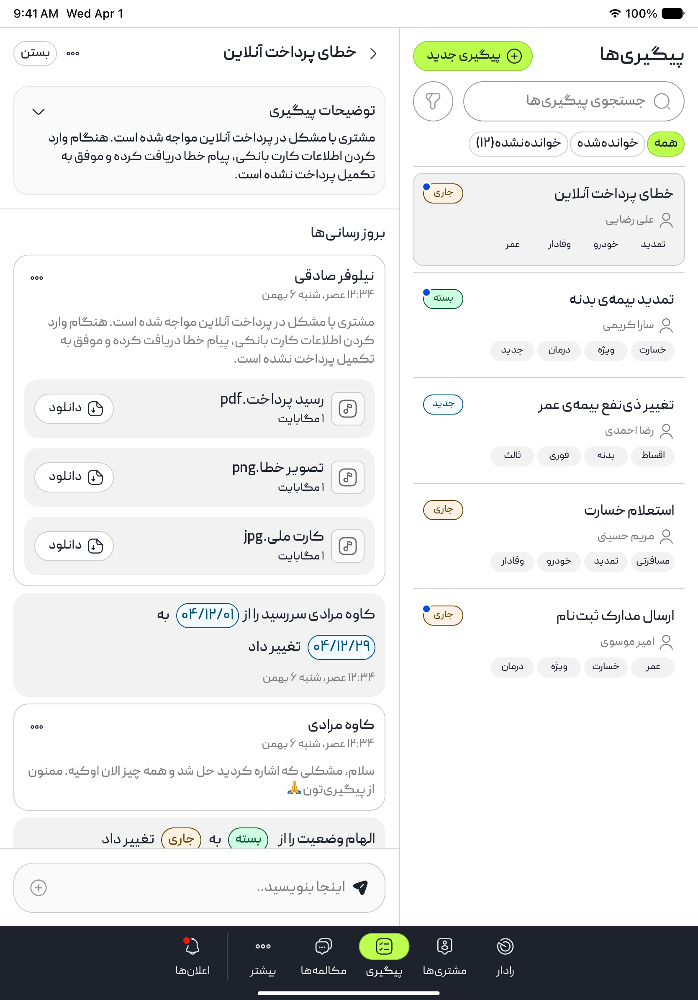

Every team sees a different slice of the same customer
A customer calls support, opens a ticket online, then buys through another channel. Each touchpoint lives in a separate system, invisible to everyone else.
We started with support. Talking to management teams showed that marketing had the same problem: repetitive manual work, scattered data and no reliable view of customer behavior. So Callingow became one platform for both.
Teams weren't missing features, they were getting by on spreadsheets
We interviewed support and marketing teams at three businesses: an online bookstore, a sales team and an academic product company. Most were managing customer relationships with spreadsheets, manual follow-ups and disconnected messaging apps.
Better tools existed. They just didn't fit, for three reasons:
These teams didn't need a watered-down WebEngage. They needed something simple enough to replace a spreadsheet that could scale up without becoming overwhelming.
Four goals to design against
From benchmarks to structure to screens
Before drawing anything, we benchmarked products that had already solved parts of the problem, inside our category and outside it, and noted what each one taught us.
Structure first
With two user types and a growing feature list, the navigation had to be settled before any screen. I grouped the panel by the job a person is doing, not by feature, and kept the customer app separate.
Wireframes before pixels
Each core screen was worked out as a layout first, so the conversation with the PM and developers was about structure, not styling.
Three decisions that shaped the product
Callingow is large, so this is not a tour. These are the three places where the first answer was wrong, or where the obvious design would have hidden how the product works.
Separate defining an action from using it
In the first version, every action was configured inside the workflow editor. Users opened an empty canvas and didn't know where to start, and each step carried a full settings form.

The trade-off: one more concept to learn before the first flow. We accepted it because the same Operations are reused by flows and by the AI assistant, so the setup cost is paid once.
Let people describe a segment in words, then show the logic
Marketing teams coming from spreadsheets think in sentences, not in filter builders. A segment can be written as plain text, and Callingow shows the conditions it understood underneath, with a switch to the form view. Segments are either static (a snapshot) or live (always up to date), and feed directly into Operations.

The trade-off: free text is faster but opaque. Showing the parsed conditions is what keeps the fourth goal, a visible system, intact.
Split the assistant into parts a team can reason about
An assistant is built from several kinds of input: knowledge, guidance, known problems and their solutions, and forms for customers to fill out. The hard part wasn't the visuals. It was making sure a team could tell what each part does and how the parts work together, so each one got its own tab, its own plain-language name and its own status.
One customer record, on every surface
Everything else is built on the same record: the timeline. Two apps, two AI assistants and three form factors read from it and write to it.
Every call, chat, ticket and purchase in one view
Support agents no longer piece history together from several systems, and marketing can see what a customer did after a campaign.

The canvas shows the logic, not the settings
Flows start from customer behavior, a schedule or segment membership. Each step shows only its type, a one-line description and three counts: how many customers are in it, have left it and have entered it. Test, run, pause and end sit in one bar, and a minimap keeps larger flows navigable. Because configuration lives in Operations and in the step drawer, a team can read a whole campaign at a glance.

An assistant for the business itself
From inside the panel, an agent can ask about a customer and get an answer drawn from that timeline: what they have, what they did last, what to do next.

The customer side of the conversation
The app customers use to talk to the assistant of a business, for mobile and desktop, in light and dark themes. Each business brings its own name and logo. The assistant answers questions and suggests products as cards, a customer can reply to a specific product or message, and the chat shows when a person from the team joins.


Reviews grounded in data, not memory
Managers see which tags come up most and how each agent is scoring over time. Any agent opens into their own chart and the comments behind it.

The panel on phone and tablet
The team panel is also designed for phone and tablet: customers and their timelines, chats, tasks, notifications and Radar, reorganized around bottom navigation.


One Persian, right-to-left system behind all of it
As the only designer, I built the design system alongside the product. It documents the visual foundations, content rules and components for three surfaces: the desktop workspace, the embedded chat widget and mobile chat, in light and dark. The whole product runs on seven type sizes, one icon library and a named set of color tokens.
In development, with strong signals from stakeholder testing
Callingow has not launched yet, so there are no usage numbers. What we have is qualitative feedback from testing with stakeholders.
“A missing puzzle piece.”
Support managers, on the customer timeline
What I would measure after launch
Stakeholder reactions are not usage. These are the numbers I would watch first, one per design goal:
The right level of freedom is a design decision
Too much flexibility overwhelms users. Too little makes the product feel limiting. Operations was our answer to that tension, and it came from watching where existing tools failed.
The full design system, wireframes and prototypes are available on request.